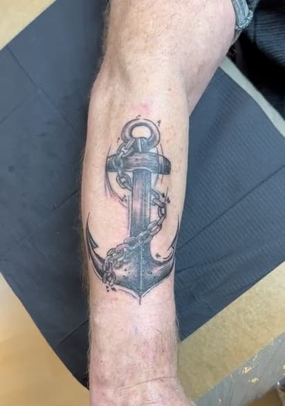
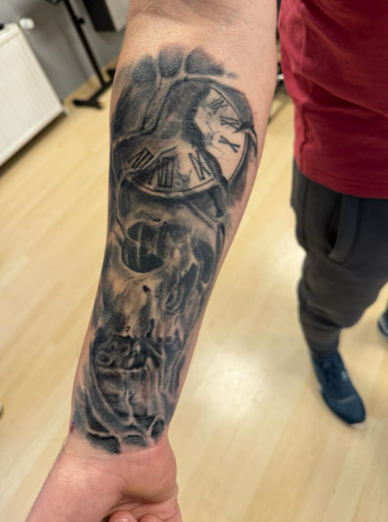
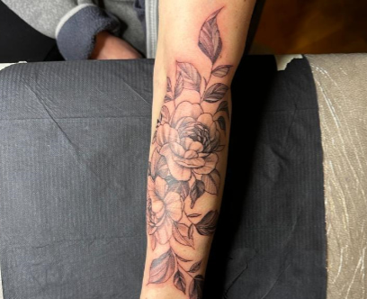

Dein tattoo studio in lage
Überteuerte Diamanten: Kö – Brilliante Tattoos: Nur bei uns!

Ein blick auf unsere neuesten werke
So individuell wie unsere Tätowierer sind auch ihre Werke. Aber überzeugt Euch gern selbst.
Einzigartige Tattoos! Oder für Lager: Schminke für immer! Die Zeiten, in denen man im Ringbuch blättert und sich aus Vorlagen ein Motiv aussucht, was Hunderte andere vorher ebenfalls ausgesucht haben, sind vorbei!
Wir möchten, dass ihr Euer Tattoo mit Stolz tragen könnt und nicht beim nächsten Badeurlaub feststellt, dass viele andere dasselbe Motiv auf der Haut tragen. Deshalb weisen wir Euch auf bestimmte Trend-Motive hin und zeigen Euch Alternativen auf. Das Tattoo soll Eure Wünsche und Ideen vereinen und trotzdem so individuell ist, wie ihr! Wir möchten schließlich nicht der Grund für das nächste Cover Up sein.
Lasst Euch in der Galerie von unseren verschiedenen Stilen und Arbeiten inspirieren und findet den für Euch und Eure Ideen passenden Tätowierer.
- 
- 
- 
Tattoo ist nicht gleich tattoo!
Düsseldorf hat heiße Schönheiten? Wir mögen’s eher gestochen scharf!
Kennst Du das? Du hast eine tolle Idee für ein Tattoo und willst Deine Idee unbedingt in die Tat umsetzen. Aber wie geht’s jetzt weiter? Wie erkenne ich ein professionelles Studio? Welcher Tätowierer ist der Richtige? Welcher Stil kommt infrage? Wir haben die Antwort auf all Deine Fragen rund um das Thema Tattoo. Egal für welchen Stil und welches Motiv Du Dich entscheidest – Du bist bei uns genau richtig. Wir sind ein bunt gemischtes Team: Nicht nur unsere festen, sondern auch unsere Gast Tätowierer, verfügen über jahrelange Praxis auf ihrem Gebiet.
In einem ausführlichen Beratungsgespräch schauen wir mit Dir gemeinsam, wie sich Deine Wünsche und Ideen harmonisch in einem Tattoo umsetzen lassen und finden so im Anschluss den passenden Tätowierer für Dein Projekt. Gemeinsam mit Deinem Tätowierer erstellst Du am Tag des Termins die Vorlage und kannst Deine Ideen direkt mit einbringen. So erhältst Du ein individuelles, perfekt auf Dich zugeschnittenes Design. Unser Team steht Dir jederzeit mit Rat und Tat zur Seite und begleitet Dich bis zur Fertigstellung Deines Traum Tattoos.
Unsere tattoo studio
Wir l(i)eben Kunst. Und das haben wir mit viel Liebe zum Detail auch in unserem Studio in Lage umgesetzt
Studio ansehenUnser hygiene versprechen
-
Eine korrekte und hygienische Arbeitsweise ist beim Tätowieren besonders wichtig, da durch die Verletzungen der Haut das Immunsystem geschwächt wird und die Gefahr einer Entzündung aufgrund von Keimen oder Mikroorganismen aus der Luft besonders hoch ist. Daher arbeiten wir jederzeit mit der größtmöglichen Sorgfalt und Hygiene. Das dient nicht nur zu Eurem, sondern auch zu unserem Schutz. Schließlich möchten weder ihr noch wir, dass ihr Euch beim Tätowieren einem gesundheitlichen Risiko aussetzt.
-
Wir achten vor, während und nach dem Tätowieren auf die Einhaltung sämtlicher Hygiene-Standards. Wir sind in ständigem Kontakt mit dem Gesundheitsamt Lage und lassen in regelmäßigen Abständen freiwillige Kontrollen durchführen. Wir möchten unsere Arbeitsabläufe den Behörden und Euch so transparent wie möglich gestalten. Unsere Reinigungs- & Desinfektionspläne hängen für Euch sichtbar in jedem Raum aus, so dass ihr Euch jederzeit selbst ein Bild machen könnt.Wir achten vor, während und nach dem Tätowieren auf die Einhaltung sämtlicher Hygiene-Standards. Wir sind in ständigem Kontakt mit dem Gesundheitsamt Lage und lassen in regelmäßigen Abständen freiwillige Kontrollen durchführen. Wir möchten unsere Arbeitsabläufe den Behörden und Euch so transparent wie möglich gestalten. Unsere Reinigungs- & Desinfektionspläne hängen für Euch sichtbar in jedem Raum aus, so dass ihr Euch jederzeit selbst ein Bild machen könnt.